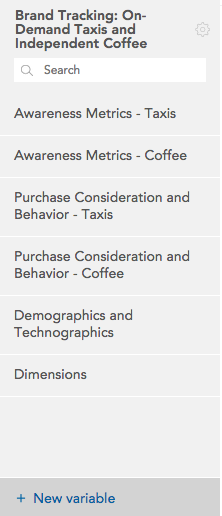
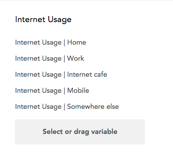
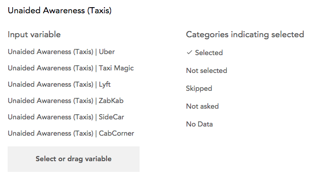
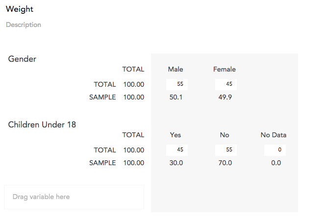

New variables can be derived from existing variables. To start creating a new
variable, click +New Variable at the bottom of the sidebar.

Public and Private Variables
Categorical variables and Combined variables can be created on a dataset by
any user. When a dataset viewer creates one of these variables, they are
always private - only the use who created it can see and use the variable.
When a dataset editor creates a combined variable or a categorical variable,
the Public/Private toggle appears in the upper-right corner. This slider
determines if the new variable is private (available only to the user that
created it) or public (available to everyone who can access the dataset).
Array, Multiple Response, and Weight variables are always created as public to
all viewers of the dataset.
Creating a Combined Variable
See Creating a Combined
Variable.
Creating a Categorical Variable
See Creating a Categorical
Variable.
Creating a Categorical Array Variable

To create an array variable, select or drag the variables that will form the
“subvariables”, or rows of the array. The columns of the array will be formed
by the union of the categories of all selected variables. Typically, an array
will be comprised of variables that share a set of categories.
Note that when creating a categorical array variable, the variables you group
to form the array will no longer appear separately in the web application.
This is in contrast with the combined-categories variable, which does not
overwrite the uncombined source variable. You will, however, be able to access
the subvariables within a categorical array separately for analysis.
Creating a Multiple Response Variable

To create a multiple response variable:
- Select or drag the variables that will be used to create the new variable. Each of these variables will be one category in the new multiple response variable.
- As variables are added to the multiple response variable interface, the categories of these variables will appear in a list. Select all categories that indicate a positive or “selected” response.
As with creating a categorical array, when you bind categorical variables into
a multiple response variable, they are no longer available separately in the
web application.
Creating a Weight

Weighting a dataset allows you to adjust the data to a specific required ratio
of one or more variables - usually demographic variables. For example, if 1000
people were surveyed - 600 men and 400 women, but the study in question was
for an area that had a 50/50 split of men and women, you could weight the
responses of the women a little more heavily to adjust for the uneven split in
your sample size.
A weight variable is a numeric variable where each row contains a multiplier
that indicates how that row should be given more or less importance. When a
weight is created in Crunch.io, this numeric weight variable is created by
specifying the target values for one or more categorical values (in the
example above, 50% Male and 50% Female). A weight variable can be constructed
from multiple categorical variables (for example to adjust the data for target
genders, ages, and incomes).
To create a weight:
- Select one or more existing categorical variables that will be used to create the weight.
- For each selected variable, their categories and the distribution of responses in those categories will be shown in the SAMPLE row. Enter the normalized values you would like to use in the TOTAL row. These values must sum to 100.
Once a weight is created it will be applied to the dataset. Multiple weights
can be created - which one is applied can be changed using the weight menu in
the upper right.